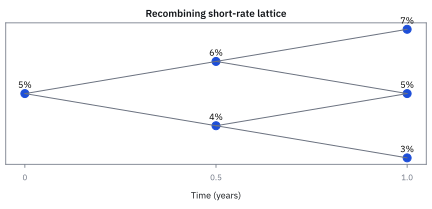
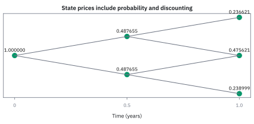
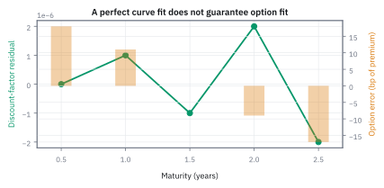

20.3 Rate Lattices: Ho-Lee and Black-Derman-Toy
ต้นไม้สองกิ่งของอัตราดอกเบี้ยระยะสั้นให้ราคาของเงินที่จ่ายเฉพาะบางสถานการณ์ ปรับทีละชั้นให้ราคาพันธบัตรตรง curve วันนี้ แล้วใช้ตั้งราคา option บนพันธบัตร forward และ futures
นักลงทุนถือ call แบบยุโรปอายุ 1 ปี บน zero-coupon bond ที่ครบกำหนดในปีที่ 1.5 หน้าตั๋ว \$1,000,000 strike 0.975 ต่อ \$1 short rate วันนี้คือ 5% ต่อปี (ทบต่อเนื่อง) อีกครึ่งปีจะเป็น 6% หรือ 4% และที่ปีที่ 1 จะเป็น 7%, 5% หรือ 3% ครึ่งต่อครึ่งทุกกิ่ง (ตัวเลขสมมติ) เพื่อนใช้อัตรากลาง 5% ที่ปีที่ 1: พันธบัตรตอนนั้นราคา 0.975310 ได้ payoff \$309.91 คิดลดกลับมาได้ \$294.80 ถูกไหม?
ลองตอบก่อนเปิดเฉลย
ไม่ถูก ราคาที่ถูกคือ \$2,564.15 เกือบเก้าเท่า option จ่ายแบบไม่สมมาตร ถ้าอัตราปีที่ 1 ลงเป็น 3% พันธบัตรราคา 0.985112 และ payoff เป็น \$10,111.94 ถ้าขึ้นเป็น 7% payoff เป็นศูนย์ ไม่ติดลบ ค่าเฉลี่ยของอัตรามองไม่เห็นก้อนนี้ ต้องมีต้นไม้ของอัตราทั้งต้น
สิ่งที่เราจะสร้าง
20.1 และ 20.2 ตั้งราคาเงินที่ล็อกได้ด้วย discount factor ของวันนี้อย่างเดียว สัญญาที่มีทางเลือกไม่เป็นแบบนั้น มันจ่ายเฉพาะบางสถานการณ์ จึงต้องรู้ว่าอัตราในอนาคตกระจายอย่างไร หน้านี้ใช้ต้นไม้สองกิ่งแบบ 18.3 แต่สิ่งที่แตกกิ่งคืออัตราดอกเบี้ยระยะสั้น ไม่ใช่ราคาหุ้น
เริ่มจากต้นไม้เล็กที่ตั้งด้วยมือ ตั้งราคาพันธบัตรด้วยการเดินย้อน หา state price ด้วยการเดินหน้า ตั้งราคา option ของโจทย์เปิดหน้า แล้วบังคับต้นไม้ให้ตรง curve ของตลาดด้วย Ho-Lee และ BDT จากนั้นใช้ต้นไม้ของคอร์สตั้งราคา zero, option อเมริกัน, forward และ futures แล้วดูว่าทำไมการ fit curve อย่างเดียวไม่พอ
ศัพท์ที่ใช้ในหัวข้อนี้
- Short rate
- อัตราดอกเบี้ยของงวดถัดไปหนึ่งงวด ซึ่งรู้ค่าตอนต้นงวด เป็นตัวแปรเดียวที่ต้นไม้เก็บ ราคาพันธบัตรทุกอายุคำนวณจากมัน
- Recombining lattice
- ต้นไม้ที่ขึ้นแล้วลงกับลงแล้วขึ้นมาถึงจุดเดียวกัน จำนวนจุดจึงโตตามจำนวนงวดแบบเส้นตรง ไม่ใช่เท่าตัวทุกงวด
- Risk-neutral probability $q$
- น้ำหนักของกิ่งขึ้นที่ใช้ตั้งราคา ไม่ใช่โอกาสจริง short rate ซื้อขายไม่ได้ จึงกำหนด $q$ เองตรง ๆ (หน้านี้ใช้ครึ่งต่อครึ่ง) แล้วไปปรับอัตราแทน
- State price (Arrow–Debreu)
- ราคาวันนี้ของเงิน \$1 ที่จ่ายเฉพาะจุดเดียวของต้นไม้ รวมทั้งน้ำหนัก $q$ และการคิดลดไว้แล้ว หาครั้งเดียวแล้วใช้ตั้งราคาได้ทุกสัญญา
- Calibration
- การเลือกค่าในต้นไม้ให้ราคาที่ต้นไม้คำนวณตรงกับราคาตลาดของตราสารที่ซื้อขายคล่อง ก่อนนำไปตั้งราคาของที่ไม่มีราคาตลาด
- Ho-Lee และ Black–Derman–Toy (BDT)
- สองวิธีวางอัตราในแต่ละชั้น Ho-Lee วางให้ห่างกันเป็นจำนวนจุดเท่ากัน (อัตราติดลบได้) BDT วางให้ห่างกันเป็นสัดส่วนเท่ากัน (อัตราเป็นบวกเสมอ)
- Cash account
- บัญชีที่เริ่มที่ \$1 แล้วทบด้วย short rate ทีละงวด ปลอดภัยทีละงวดแต่ไม่ปลอดภัยเมื่อมองหลายงวด ใช้เป็นตัวหารของราคาทุกตัว
สัญลักษณ์และหน่วย
| สัญลักษณ์ | ความหมาย | หน่วย |
|---|---|---|
| $\Delta t$ | ความยาวหนึ่งงวดของต้นไม้ | ปี |
| $r_{n,j}$ | short rate ที่ชั้น $n$ จุด $j$ | ต่อปี หรือต่องวด |
| $q$ | น้ำหนักของกิ่งขึ้น (หน้านี้ $\tfrac12$) | ไม่มีหน่วย |
| $Q_{n,j}$ | state price ของจุด $(n,j)$ | \$ วันนี้ต่อ \$ ที่จุดนั้น |
| $D(0,t_n)$ | discount factor ของตลาดถึงชั้น $n$ | \$ ต่อ \$ |
| $\alpha_n,\ \sigma$ | ระดับของชั้นและความผันผวนของ Ho-Lee | ต่อปี, ต่อ √ปี |
| $a_i,\ b$ | ระดับของชั้นและความผันผวนของ log อัตราใน BDT | ต่องวด, ไม่มีหน่วย |
| $Z_{i,j},\ B_t$ | ราคาพันธบัตรที่จุด $(i,j)$ และ cash account | \$ |
| $G_0,\ F_k$ | ราคา forward วันนี้ และราคา futures ที่งวด $k$ | \$ |
ขั้นที่ 1 — ต้นไม้ของ short rate: ทุกจุดรู้อัตราของงวดหน้า
ต้นไม้เก็บ short rate ของแต่ละจุด คืออัตราที่ใช้กับงวดถัดไปหนึ่งงวด ที่แต่ละจุด มูลค่าคือค่าเฉลี่ยถ่วงของสองจุดลูก คิดลดหนึ่งงวดด้วยอัตราของจุดนั้นเอง ไม่ใช่อัตราเดียวทั้งต้น นี่คือกฎเดียวที่ใช้ซ้ำทั้งหน้า ต้นไม้ของโจทย์เปิดหน้ามีสามชั้น
ต้นไม้หุ้นใน 18.3 ได้ $q$ มาจากการเลียนแบบ เพราะหุ้นซื้อขายได้ short rate ซื้อขายไม่ได้ จึงกำหนด $q$ เองตรง ๆ ค่าใดก็ได้ระหว่าง 0 กับ 1 ราคาที่ได้ไม่เปิดช่องเงินฟรี เพราะทุกราคาคำนวณจากระบบเดียวกันที่มีราคาเป็นบวกทุกจุด งานยากจึงย้ายไปที่การปรับอัตราให้ตรงตลาด (ขั้นที่ 5)
ต้นไม้นี้ recombine: ขึ้นแล้วลงกับลงแล้วขึ้นมาถึง 5% เดียวกัน ชั้นที่ $n$ จึงมีแค่ $n+1$ จุด ไม่ใช่ $2^n$
Figure 20.3a — ต้นไม้ short rate สองงวด

แกนนอนคือเวลา 0, 0.5 และ 1.0 ปี ป้ายทุกจุดคือ short rate ทบต่อเนื่อง: 5% ที่วันนี้ 6% หรือ 4% ที่ครึ่งปี และ 7%, 5% หรือ 3% ที่ปีที่ 1 เส้นเทาคือกิ่งที่ไปได้ จุดกลางของชั้นสุดท้ายมีสองเส้นเข้ามา ระยะห่างเท่ากันทุกชั้น (2 จุด) คือแบบ Ho-Lee ของขั้นที่ 5 แกนตั้งไม่มีหน่วย ใช้แค่วางตำแหน่งจุด
ขั้นที่ 2 — ราคาพันธบัตรบนต้นไม้: เดินย้อนจากวันครบกำหนด
ลองกับของที่ง่ายที่สุด zero ที่จ่าย \$1 ในปีที่ 1 ที่จุดครึ่งปีมันเหลืออีกงวดเดียว ราคาคือ $e^{-r\Delta t}$ ของจุดนั้น แล้วถอยมาวันนี้อีกงวดด้วยกฎของขั้นที่ 1
ต้นไม้บอกว่า \$1 ในปีที่ 1 มีค่าวันนี้ 0.951241 ถ้าตลาดบอกตัวเลขอื่น ต้นไม้นี้ใช้ตั้งราคาไม่ได้ ต้องปรับจนตรง (ขั้นที่ 5)
สังเกตว่าค่าเฉลี่ยของสอง discount factor คือ 0.975322 สูงกว่า discount factor ของอัตรากลาง 5% ซึ่งคือ 0.975310 เล็กน้อย เพราะ $e^{-x}$ โค้งหงาย ค่าเฉลี่ยของมันจึงมากกว่าค่าที่จุดเฉลี่ย ความต่างเล็ก ๆ นี้จะกลับมาในขั้นที่ 5
ขั้นที่ 3 — state price: ราคาของ \$1 ที่จ่ายเฉพาะจุดเดียว
เดินย้อนทีละสัญญาใช้ได้ แต่ถ้าต้องตั้งราคาหลายสัญญามีทางลัด: หาราคาวันนี้ของเงิน \$1 ที่จ่ายเฉพาะจุด $(n,j)$ จุดเดียว เรียกว่า state price $Q_{n,j}$ เงินก้อนนั้นที่ชั้นก่อนหน้ามีค่าไม่เป็นศูนย์แค่ที่พ่อแม่สองจุด จุดละ $\tfrac12e^{-r\Delta t}$ ให้ $j$ นับจากบนลงล่าง จุด $(n+1,s)$ มาจาก $(n,s)$ ด้วยการลง และจาก $(n,s-1)$ ด้วยการขึ้น
แถวแรกคือเงิน \$1 ที่จุด $(n+1,s)$ ตีราคากลับไปที่พ่อแม่ แล้วคูณ state price ของพ่อแม่ ($Q_{0,0}=1$) จุดกลางมาได้สองทาง แต่ละทางราคาต่างกันเพราะคิดลดด้วยอัตราของพ่อแม่คนละจุด (6% หรือ 4%) ต้องบวกทั้งสองทาง
state price รวม $q$ และการคิดลดไว้แล้ว จึงไม่ใช่โอกาส (รวมกันได้ 0.951241 ไม่ใช่ 1) ผลบวกของชั้นปีที่ 1 ตรงกับราคา zero ของขั้นที่ 2 ทุกหลัก สองวิธีคนละทิศได้ตัวเลขเดียวกัน นี่คือการตรวจที่สำคัญที่สุดของต้นไม้
Figure 20.3b — state price ไหลไปตามกิ่งและรวมกันที่จุดกลาง

ต้นไม้เดียวกับ Figure 20.3a แต่ป้ายคือ state price: 1.000000 วันนี้ 0.487655 สองจุดที่ครึ่งปี และ 0.236621, 0.475621 และ 0.238999 ที่ปีที่ 1 (บนลงล่าง) จุดกลางมีค่ามากกว่าสองปลายเพราะรับจากสองเส้นทาง จุดล่าง (อัตรา 3%) มากกว่าจุดบน (7%) เพราะมาจากพ่อแม่ที่คิดลดด้วย 4% ผลบวกชั้นปีที่ 1 คือ 0.951241
ขั้นที่ 4 — คำตอบของโจทย์เปิดหน้า: call บน zero-coupon bond
โจทย์ให้อะไรมาบ้าง: call หมดอายุปีที่ 1 บน zero ที่ครบกำหนดปีที่ 1.5 หน้าตั๋ว \$1,000,000 strike 0.975 ต่อ \$1 ที่วันใช้สิทธิ์พันธบัตรเหลือครึ่งปี และอัตราของครึ่งปีนั้นรู้แล้ว ราคาพันธบัตรจึงเป็น $e^{-r(0.5)}$ ของแต่ละจุด state price จากขั้นที่ 3
คำตอบ: \$2,564.15 payoff เป็นเงินที่ปีที่ 1 และ state price ย้ายมันมาวันนี้ในขั้นเดียว ไม่ต้องคิดลดซ้ำ ถ้าคูณ discount factor ปีที่ 1 อีกครั้งจะคิดลดสองรอบ ส่วนวิธีอัตรากลางตัวเดียวได้ $309.91(0.951241)=\$294.80$ ต่ำไปเกือบเก้าเท่า เพราะมูลค่าเกือบทั้งหมด (\$2,416.75) มาจากจุดอัตรา 3% ซึ่งค่าเฉลี่ยมองไม่เห็น
ตรวจเองใน 10 วินาที: $(0.985112-0.975)(1{,}000{,}000)=10{,}111.94$ คูณ state price ราว 0.24 ได้ราว \$2,400 เป็นก้อนใหญ่ของคำตอบ
Figure 20.3c — call บนพันธบัตรมีค่าเฉพาะเมื่ออัตราต่ำ

แกนนอนคือ short rate ตอนใช้สิทธิ์ 2% ถึง 8% (121 จุด) แกนตั้งคือ $10^6(e^{-0.5r}-0.975)^+$ เป็นดอลลาร์ เส้นประคืออัตรา $-\ln(0.975)/0.5=5.0636\%$ ที่พันธบัตรราคาเท่า strike พอดี ต่ำกว่านั้น payoff เพิ่มราว \$4,900 ต่อทุก 1 จุดที่อัตราลดลง (\$15,050 ที่ 2%) สูงกว่านั้นเป็นศูนย์ รูปหักมุมนี้คือเหตุที่ต้องรู้การกระจายของอัตรา ไม่ใช่แค่ค่าเฉลี่ย
ขั้นที่ 5 — Ho-Lee: ปรับระดับทีละชั้นให้ตรง curve ของตลาด
ต้นไม้ของขั้นที่ 1 ตั้งด้วยมือ ต้นไม้จริงต้องให้ราคา zero ตรงกับ curve ของตลาดทุกอายุ Ho-Lee วางอัตราแบบบวก: ทุกจุดในชั้นเดียวกันห่างกันเท่ากัน $2\sigma\sqrt{\Delta t}$ และเลื่อนทั้งชั้นด้วยระดับ $\alpha_n$ ซึ่งเป็นตัวไม่รู้ตัวเดียวต่อชั้น ใช้เงื่อนไขของขั้นที่ 3: ผลบวกของ state price ชั้นถัดไปต้องเท่ากับ discount factor ของตลาด
$\alpha_n$ เลื่อนทุกจุดในชั้นเท่ากัน $e^{-\alpha_n\Delta t}$ จึงดึงออกนอกผลบวกได้ เหลือสมการเดียวตัวไม่รู้เดียวต่อชั้น แก้จากชั้นแรกไปชั้นหลังแบบ bootstrapping ของ 20.1 ต้นไม้ของขั้นที่ 1 คือ Ho-Lee ที่ $\alpha_n=5\%$ ทุกชั้นและ $\sigma\sqrt{0.5}=1\%$ หรือ $\sigma=1.4142\%$ ต่อ √ปี
ลอง calibrate กับ curve ของ 20.1 (0.9755, 0.9505, 0.931421875, 0.9059165) ด้วย $\sigma=1\%$ ได้ $\alpha$ = 4.9610, 5.1936, 4.0602 และ 5.5643% ถ้า $\sigma=0$ ได้ 4.9610, 5.1924, 4.0552 และ 5.5530% คือ forward ของ 20.1 พอดี ความผันผวนดัน $\alpha$ สูงกว่า forward 0.1, 0.5 และ 1.1 bp ด้วยเหตุผลโค้งหงายของขั้นที่ 2
ขั้นที่ 6 — BDT: วางอัตราแบบคูณ อัตราจึงเป็นบวกเสมอ
Ho-Lee ห่างกันเป็นจำนวนจุด ถ้าอัตราต่ำ จุดล่างติดลบได้ BDT วาง log ของอัตราแบบบวกแทน ตัวอัตราจึงคูณกัน แบบที่คอร์สใช้คือ $r_{i,j}=a_ie^{bj}$ ทบต่องวด งวดละปี $b$ คือความผันผวนของ log อัตรา แล้วแก้ $a_i$ ทีละชั้นให้ตรงกับ spot rate $s_{i+1}$ ของตลาด
เส้น spot ทบรายปีของตัวอย่างคือ 7.30, 7.62, 8.10, 8.45, 9.20, 9.64, 10.12, 10.45, 10.75 และ 11.22% ตรึง $b=0.005$ งวดแรกมีจุดเดียว $a_0=7.30\%$ state price ของสองจุดปีที่ 1 คือ 0.465983 แก้สมการได้ $a_1=7.9211\%$ ต่อไปได้ $a_2$ ถึง $a_4$ = 9.0212, 9.4357 และ 12.1302%
ฝั่งขวาลดลงเมื่อ $a_i$ เพิ่ม (อัตราสูง คิดลดมาก) จาก $\sum_jQ_{i,j}$ ที่ $a_i=0$ ลงไปหาศูนย์ จึงมีคำตอบบวกเดียวเสมอเมื่อ curve ไม่บังคับให้อัตราติดลบ และหาได้ด้วย bisection ไม่ต้องแก้ทุกชั้นพร้อมกัน
Figure 20.3d — Ho-Lee ขยับเป็นจำนวนจุด BDT ขยับเป็นสัดส่วน

แกนนอนคืออัตราเริ่มต้น 0.5% ถึง 8% แกนตั้งคืออัตราของจุดถัดไป เส้นน้ำเงินคือ Ho-Lee ขึ้นหรือลง 1 จุดเท่ากันทุกระดับ เส้นเขียวคือ BDT คูณด้วย $e^{\pm0.2}$ ที่อัตรา 5% Ho-Lee ให้ 6% กับ 4% BDT ให้ 6.107% กับ 4.094% แต่ที่อัตรา 0.5% Ho-Lee ลงไปถึง −0.5% ขณะที่ BDT เหลือ 0.409% ตัวเลข ±1 จุดและ 0.2 เลือกให้ใกล้กันที่ 5% เพื่อเทียบรูปร่าง ไม่ได้ calibrate กับตลาด
ขั้นที่ 7 — ต้นไม้ของคอร์ส: เริ่ม 6% ขึ้นคูณ 1.25 ลงคูณ 0.9
ต้นไม้สอนของคอร์สทบต่องวด (คิดลดด้วย $1+r$) short rate เริ่ม 6% แต่ละงวดคูณ 1.25 หรือ 0.9 ครึ่งต่อครึ่ง ให้ $j$ นับจำนวนครั้งที่ขึ้น ตั้งราคา zero หน้าตั๋ว 100 ที่ครบกำหนดงวดที่ 4 ด้วยการเดินย้อน
ต้นไม้ recombine เพราะ $1.25(0.9)=0.9(1.25)$ state price ทบต่องวดใช้สมการเดินหน้าเดิมโดยแทน $e^{-r\Delta t}$ ด้วย $1/(1+r)$ ชั้นที่ 4 ได้ 0.0511, 0.1992, 0.2901, 0.1868 และ 0.0449 (อัตราต่ำไปสูง) คูณ 100 แล้วบวกได้ 77.22 ตรงกับการเดินย้อน
ทำแบบนี้ทุกอายุได้ spot 6.00, 6.22, 6.45, 6.68 และ 6.91% short rate ตัวเดียวจึงให้ทั้งเส้น ต้นไม้แบบคูณนี้ไม่มีแรงดึงกลับ อัตราบนสุดที่งวดที่ 5 ลอยไปถึง 18.31% ใช้สอนวิธีคิด ไม่ใช่ใช้งานจริง
ราคาที่หารด้วย cash account $B_t=(1+r_0)\cdots(1+r_{t-1})$ เป็นค่าเฉลี่ยของงวดหน้าที่หารแบบเดียวกัน บัญชีนี้ปลอดภัยทีละงวดแต่ไม่ปลอดภัยสองงวด: $B_2$ เป็น 1.1395 หรือ 1.11724 ตามว่างวดแรกขึ้นหรือลง
ขั้นที่ 8 — option บนพันธบัตรของต้นไม้คอร์ส: call แบบยุโรป และ put แบบอเมริกัน
โจทย์ให้อะไรมาบ้าง: zero ของขั้นที่ 7 ราคาที่งวดที่ 2 คือ 90.64, 87.35 และ 83.08 และที่งวดที่ 3 คือ 95.81, 94.27, 92.22 และ 89.51 (อัตราต่ำไปสูง) call strike 84 หมดอายุงวดที่ 2 และ put แบบอเมริกัน strike 88 หมดอายุงวดที่ 3 ใช้สิทธิ์ได้ทุกงวด ที่แต่ละจุดเลือกค่ามากกว่าระหว่างใช้สิทธิ์ทันทีกับถือต่อ $H$
คำตอบ: call ราคา 2.97 มีค่าเฉพาะจุดที่อัตราต่ำ เพราะพันธบัตรแพง put อเมริกันราคา 10.78 และควรใช้สิทธิ์ทันทีวันนี้ เพราะ $88-77.22=10.78$ มากกว่าค่าของการถือต่อ 5.80 ที่งวดที่ 3 พันธบัตรราคาเกิน 88 ทุกจุด put แบบยุโรปที่ strike เดียวกันจึงมีค่าศูนย์ ราคา 10.78 ทั้งก้อนมาจากสิทธิ์ใช้ก่อนกำหนด ตัวเลขนี้มาจากค่าที่เลือกสอน ไม่ใช่พฤติกรรมที่พบบ่อยในตลาด
ตรวจเองใน 10 วินาที: จุดบนสุดของงวดที่ 1 (อัตรา 7.5%): $\tfrac12(0+3.35)/1.075=1.56$ ตรงกับแถวที่สาม
ขั้นที่ 9 — forward กับ futures บนพันธบัตรเดียวกันไม่เท่ากัน
พันธบัตรคูปอง 10% ต่องวด ครบกำหนดงวดที่ 6 ส่งมอบที่งวดที่ 4 หลังจ่ายคูปองงวดที่ 4 แล้ว ราคาพันธบัตรตอนส่งมอบ $S_4$ คือ 111.16, 108.00, 103.83, 98.44 และ 91.66 (อัตราต่ำไปสูง) forward มีค่าศูนย์วันเซ็นและจ่ายครั้งเดียวตอนส่งมอบ futures ปรับกำไรขาดทุนทุกงวดและเข้าสัญญาได้ฟรีทุกงวด
forward: $G_0$ รู้วันนี้จึงดึงออกจากค่าเฉลี่ยได้ ตัวบนคือพันธบัตรคิดลดด้วยต้นไม้ (79.83) ตัวล่างคือราคา zero งวดที่ 4 (0.7722) futures: $B_{k+1}$ รู้ตั้งแต่งวด $k$ จึงตัดทิ้งได้ ราคา futures จึงเป็นค่าเฉลี่ยธรรมดาของสองลูก ไม่คิดลด ถอยจาก $F_4=S_4$ ทีละชั้น
สองราคาต่างกัน 0.16 เพราะอัตรากับราคาพันธบัตรเดินสวนกัน วันที่พันธบัตรขึ้นคือวันที่อัตราลง กำไรจาก futures จึงถูกนำไปฝากตอนอัตราต่ำ ถ้าอัตราไม่สุ่ม สองราคานี้จะเท่ากัน แบบที่ 19.1 สมมติไว้
ขั้นที่ 10 — fit curve ได้พอดี ยังไม่ได้บอกอะไรเรื่องความผันผวน
ขั้นที่ 5 และ 6 fit ราคา zero ได้พอดีไม่ว่าจะเลือก $\sigma$ หรือ $b$ เท่าไร เพราะระดับของชั้นปรับตามเสมอ ลอง BDT กับเส้น spot เดียวกันสองครั้ง: $b=0.005$ และ $b=0.01$
ทั้งสองต้นไม้ให้ราคา zero ทั้งสิบอายุตรงตลาดทุกตัว (แถวสุดท้าย) ต่างกันแค่ว่าอัตรากระจายกว้างแค่ไหน ราคา zero จึงไม่มีข้อมูลเรื่องความผันผวนเลย แต่ราคา option ไวต่อมันมาก 20.4 จะตั้งราคา swaption บนสองต้นไม้นี้และได้ต่างกันเกือบครึ่ง
ความผันผวนต้อง calibrate กับราคา option ที่ซื้อขายคล่อง เช่น cap หรือ swaption และควรเลือกตราสารที่ใกล้กับของที่จะตั้งราคา
Figure 20.3e — fit curve พอดีไม่ได้รับประกันว่า option ถูก

ภาพประกอบแนวคิด ตัวเลขทั้งหมดสมมติ แกนนอนคืออายุ 0.5 ถึง 2.5 ปี เส้นเขียว (แกนซ้าย) คือส่วนต่างของ discount factor ระดับ $10^{-6}$ (0, +1, −1, +2, −2 ในหน่วย $10^{-6}$) แท่งส้ม (แกนขวา) คือความคลาดของราคา option +18, +11, 0, −9 และ −17 bp ของ premium ภาพบอกว่า curve ตรงแทบสมบูรณ์ได้พร้อมกับราคา option ที่ผิดเป็นระบบ discount factor ที่ภาพอ้างว่าเป็นตลาด (0.97531, 0.95124 และ 0.9278 ในสามอายุแรก) คือค่าของต้นไม้ในขั้นที่ 1 ถึง 3
คำถามที่ควรถามออกมาดัง ๆ
ถ้า $q=\tfrac12$ ไม่ใช่โอกาสจริง ความเชื่อเรื่องอัตราในอนาคตเข้ามาตรงไหน? เข้ามาผ่านการ calibrate ระดับ $\alpha_n$ หรือ $a_i$ ซึ่งบังคับให้ราคาตรงตลาด ความกลัวความเสี่ยงของตลาดฝังอยู่ในราคาเหล่านั้นแล้ว โอกาสจริงไม่ได้ใช้ในการตั้งราคาเลย เหมือนหุ้นใน 18.3
ทำไมไม่ใช้ Vasicek หรือ CIR ของ 13.4 เลย? แบบจำลองที่มีพารามิเตอร์คงที่ไม่กี่ตัวทำให้ราคา zero ทุกอายุตรง curve พร้อมกันไม่ได้ (20.5 จะเห็นส่วนที่เหลือ) ต้นไม้ของหน้านี้มีระดับหนึ่งตัวต่อชั้น จึงตรงได้พอดี ถ้าแบบจำลองตั้งราคาของที่มีราคาตลาดยังผิด ก็ไม่มีเหตุผลให้เชื่อราคาของที่ซับซ้อนกว่า
สร้างต้นไม้ใน Excel อย่างไร? ใส่อัตราเริ่ม ตัวคูณ $u$ ตัวคูณ $d$ และจำนวนงวดในช่องบนสุด คอลัมน์ใหม่แต่ละคอลัมน์คือคอลัมน์เก่าคูณ $d$ ทุกช่อง บวกช่องบนสุดใหม่ที่เป็นช่องบนสุดเดิมคูณ $u$ สูตรของช่องตรวจว่าเกินจำนวนงวดหรือยังก่อน เปลี่ยนจำนวนงวดแล้วต้นไม้ขยายเอง เช่น $u=1.1$ $d=0.9$ หกงวด ชั้นสุดท้ายได้ 3.19% ถึง 10.63%
ความผิดที่ให้คำตอบผิดแบบเงียบ ๆ
ใช้อัตรากลางตัวเดียวกับ option: ได้ \$294.80 แทน \$2,564.15 ของโจทย์เปิดหน้า payoff ที่หักมุมต้องการการกระจายทั้งหมด
ลืมเส้นทางที่สองของจุดกลาง: ใช้แค่ทางจากจุดบน ได้ $Q_{2,1}=0.236621$ แทน 0.475621 ผลบวกของชั้นเหลือ 0.712 ไม่ใช่ 0.951 และราคา call เหลือ \$2,490.08 แทน \$2,564.15
คิดลดซ้ำหลังคูณ state price: $2{,}564.15(0.951241)=\$2{,}439.12$ ผิดไป \$125.02 state price เป็นเงินวันนี้อยู่แล้ว
อ่าน state price เป็นโอกาส: ผลบวกของชั้นคือราคา zero (0.951241) ไม่ใช่ 1 ถ้าหารด้วยผลบวกเพื่อให้เป็นโอกาส ต้องคูณ discount factor กลับเข้าไป
เชื่อว่า fit curve แล้วราคา option ถูก: $b=0.005$ และ $b=0.01$ fit curve เดียวกันพอดี แต่ให้ swaption ต่างกันเกือบครึ่งใน 20.4
ใช้ Ho-Lee ตอนอัตราต่ำโดยไม่ตรวจ: ที่อัตรา 0.5% ระยะ 1 จุดทำให้จุดล่างเป็น −0.5% ถ้าสัญญาขึ้นกับอัตราใกล้ศูนย์ ต้องดูว่าอัตราติดลบเป็นไปได้จริงในตลาดนั้นหรือไม่
ใช้ทำอะไรบนโต๊ะจริง
ตลาดตราสารหนี้ใหญ่กว่าตลาดหุ้น ไตรมาสที่ 3 ปี 2012 พันธบัตรสหรัฐฯ ที่ค้างอยู่มีมูลค่า \$35.3 ล้านล้าน (รัฐบาล 30.4% บริษัท 24.3% mortgage 23.3% ท้องถิ่น 10.5% agency 6.7% และ asset-backed 4.8%) เทียบตลาดหุ้นสหรัฐฯ ราว \$26 ล้านล้าน อนุพันธ์บนตลาดนี้ต้องใช้แบบจำลองของทั้ง curve ต้นไม้ของหน้านี้คือเครื่องมือพื้นฐานที่สุด
โต๊ะใช้ต้นไม้ที่ calibrate แล้วตั้งราคาพันธบัตรที่ผู้ออกไถ่ถอนก่อนได้ option บนพันธบัตร และ swaption ที่ใช้สิทธิ์ได้หลายวัน ทุกครั้งตรวจว่าผลบวกของ state price แต่ละชั้นตรง curve ตรวจว่าราคาไม่เปลี่ยนเมื่อซอยงวดให้ถี่ขึ้น และรายงานความไวต่อทั้ง curve และความผันผวน
สามโจทย์ตรวจความเข้าใจ
1. บนต้นไม้ของขั้นที่ 1 ถึง 3 zero ที่ครบกำหนดปีที่ 1.5 มีราคาเท่าไร?
เฉลย
คูณ state price ปีที่ 1 กับราคาพันธบัตรที่เหลือครึ่งปีแล้วบวก: $0.236621(0.965605)+0.475621(0.975310)+0.238999(0.985112)=0.22848+0.46388+0.23544=0.92780$ ตรงกับค่าตลาดสมมติ 0.9278 ใน Figure 20.3e
2. ถ้าโจทย์เปิดหน้าเป็น put strike 0.975 แทน call ราคาเท่าไร และตรวจด้วย put–call parity อย่างไร?
เฉลย
put จ่ายเฉพาะจุดอัตรา 7%: $10^6(0.975-0.965605)=9{,}394.58$ คูณ 0.236621 ได้ \$2,222.96 parity: call − put = มูลค่าวันนี้ของ $N(P-0.975)$ ทุกจุด $=10^6(0.927801)-0.975(10^6)(0.951241)=927{,}801.47-927{,}460.28=341.19$ และ $2{,}564.15-2{,}222.96=341.19$ ตรงกัน
3. บนต้นไม้ของคอร์ส call strike 84 ที่หมดอายุงวดที่ 1 (แทนงวดที่ 2) ราคาเท่าไร?
เฉลย
zero งวดที่ 4 ที่งวดที่ 1 ราคา 84.43 (อัตรา 5.4%) และ 79.27 (อัตรา 7.5%) payoff คือ 0.43 และ 0 ราคาวันนี้ $\tfrac12(0.4336)/1.06=0.2045$ ถูกกว่า call งวดที่ 2 (2.97) มาก เพราะมีเวลาให้อัตราลงน้อยกว่าและ strike เกือบเท่าราคาสูงสุดที่เป็นไปได้
คำนวณซ้ำด้วย JavaScript
โค้ดนี้หา state price ด้วยสมการเดินหน้า เดินย้อนด้วยสิทธิ์ใช้ก่อนกำหนด ตั้งราคา call ของโจทย์เปิดหน้าและวิธีอัตรากลาง calibrate Ho-Lee กับ curve ของ 20.1 สร้างต้นไม้ของคอร์สแล้วตั้งราคา zero, spot, call, put อเมริกันและยุโรป forward และ futures และ calibrate BDT สองค่า $b$ แล้วพิมพ์ตัวเลขหลักหนึ่งบรรทัด
const {exp, log, sqrt, max} = Math;
// A recombining lattice is a list of layers; layer n holds n + 1 short rates.
function checkLattice(rates) {
if (!Array.isArray(rates) || rates.length === 0) throw new TypeError('rates must be a non-empty array of layers');
rates.forEach((layer, n) => {
if (!Array.isArray(layer) || layer.length !== n + 1) throw new RangeError(`layer ${n} must hold ${n + 1} rates`);
if (layer.some(x => !Number.isFinite(x) || x <= -1)) throw new RangeError('every rate must be a number above -100%');
});
return rates;
}
// One-period discount at a node: continuous e^(-r dt), or per-period 1 / (1 + r) when dt is null.
const disc = (r, dt) => dt === null ? 1 / (1 + r) : exp(-r * dt);
// Forward equations for state prices with q = 1/2: node j of layer n + 1 has parents j - 1 and j.
function statePrices(rates, dt) {
checkLattice(rates);
const Q = [[1]];
rates.forEach((layer, n) => {
const next = Array(n + 2).fill(0);
layer.forEach((r, j) => { const v = Q[n][j] * 0.5 * disc(r, dt); next[j] += v; next[j + 1] += v; });
Q.push(next);
});
return Q;
}
// Backward induction from layer `from` to 0, keeping every layer; `early(n, j, hold)` may replace the holding value.
function backward(rates, dt, terminal, from, early = (n, j, h) => h) {
checkLattice(rates.slice(0, from));
if (terminal.length !== from + 1) throw new RangeError('terminal layer must hold from + 1 values');
const layers = [terminal];
for (let n = from - 1; n >= 0; n--) {
const V = layers[0];
layers.unshift(rates[n].map((r, j) => early(n, j, disc(r, dt) * 0.5 * (V[j] + V[j + 1]))));
}
return layers;
}
// Ho-Lee: r = alpha_n + (n - 2j) sigma sqrt(dt); alpha_n solved so layer n reprices D(0, t_{n+1}).
function hoLee(D, sigma, dt) {
if (!(sigma >= 0)) throw new RangeError('sigma must be at least 0');
let Q = [1]; const alpha = [], rates = [];
D.forEach((target, n) => {
const x = Q.map((_, j) => (n - 2 * j) * sigma * sqrt(dt));
const H = Q.reduce((s, q, j) => s + q * exp(-x[j] * dt), 0);
const a = -log(target / H) / dt;
alpha.push(a); rates.push(x.map(v => a + v));
Q = statePrices(rates, dt)[n + 1];
});
return {alpha, rates, check: Q.reduce((s, q) => s + q, 0)};
}
// BDT with per-period compounding: r = a_i e^(b j); a_i by bisection so layer i reprices the spot curve.
function bdt(spot, b) {
let Q = [1]; const a = [];
spot.forEach((s, i) => {
const target = 1 / (1 + s) ** (i + 1);
const f = ai => Q.reduce((sum, q, j) => sum + q / (1 + ai * exp(b * j)), 0) - target;
if (!(f(0) > 0)) throw new RangeError('spot curve needs a negative rate level');
let lo = 0, hi = 1;
for (let k = 0; k < 200; k++) { const m = (lo + hi) / 2; if (f(m) > 0) lo = m; else hi = m; }
const ai = (lo + hi) / 2; a.push(ai);
const next = Array(i + 2).fill(0);
Q.forEach((q, j) => { const v = q / (2 * (1 + ai * exp(b * j))); next[j] += v; next[j + 1] += v; });
Q = next;
});
return a;
}
// Toy tree (continuous, dt = 0.5), each layer listed from the highest rate down.
const toy = [[0.05], [0.06, 0.04], [0.07, 0.05, 0.03]];
const Qt = statePrices(toy.slice(0, 2), 0.5);
const bondAtExercise = toy[2].map(r => exp(-r * 0.5));
const payoff = bondAtExercise.map(p => 1e6 * max(p - 0.975, 0));
const oneYear = Qt[2].reduce((s, q) => s + q, 0);
const D201 = [0.9755, 0.9505, 0.931421875, 0.9059165396341463]; // the curve of 20.1
// Course tree: per-period rates 6%, up x1.25, down x0.9; j counts up moves (j = 0 is the lowest rate).
const course = Array.from({length: 6}, (_, i) => Array.from({length: i + 1}, (_, j) => 0.06 * 1.25 ** j * 0.9 ** (i - j)));
const Qc = statePrices(course, null);
const Z = backward(course, null, Array(5).fill(100), 4); // zero maturing at t = 4, every layer
const call = backward(course, null, Z[2].map(z => max(z - 84, 0)), 2);
const putPay = Z[3].map(z => max(88 - z, 0));
const putA = backward(course, null, putPay, 3, (n, j, h) => max(88 - Z[n][j], h));
const putE = backward(course, null, putPay, 3);
const hold0 = 0.5 * (putA[1][0] + putA[1][1]) / 1.06;
// 10% coupon bond maturing at t = 6, delivered ex-coupon at t = 4.
const V5 = course[5].map(r => 110 / (1 + r) + 10);
const S4 = backward(course, null, V5, 5)[4];
const discountedS4 = backward(course, null, S4, 4)[0][0];
let fut = S4; for (let n = 3; n >= 0; n--) fut = fut.slice(0, n + 1).map((_, j) => 0.5 * (fut[j] + fut[j + 1]));
const spot = [7.30, 7.62, 8.10, 8.45, 9.20, 9.64, 10.12, 10.45, 10.75, 11.22].map(x => x / 100);
console.log(JSON.stringify({
toy: {Q1: Qt[1], Q2: Qt[2], oneYear, backward: backward(toy, 0.5, [1, 1, 1], 2)[0][0], bondAtExercise, payoff,
call: payoff.reduce((s, x, j) => s + x * Qt[2][j], 0), singleRate: 1e6 * (exp(-0.05 * 0.5) - 0.975) * oneYear,
boundary: -log(0.975) / 0.5, sigma: 0.01 / sqrt(0.5), D15: statePrices(toy, 0.5)[3].reduce((s, q) => s + q, 0)},
hoLee: {sigma1: hoLee(D201, 0.01, 0.5), sigma0: hoLee(D201, 0, 0.5).alpha},
course: {Z0: Z[0][0], Z2: Z[2], Z3: Z[3], Q2: Qc[2], Q32: Qc[3][2], Q4: Qc[4],
spot: [1, 2, 3, 4, 5].map(T => (1 / Qc[T].reduce((s, q) => s + q, 0)) ** (1 / T) - 1),
top: course[5][5], call: call[0][0], call1: call[1], putA: putA[0][0], putE: putE[0][0], hold0,
S4, discountedS4, forward: discountedS4 / (Z[0][0] / 100), futures: fut[0], cash2: [1.06 * 1.075, 1.06 * 1.054]},
bdt: {b005: bdt(spot, 0.005), b01: bdt(spot, 0.01), firstState: 1 / (2 * 1.073)}
}));ที่มาที่ไป
แบบจำลองอัตราดอกเบี้ยรุ่นแรก เช่น Vasicek (1977) และ Cox–Ingersoll–Ross (1985) มีพารามิเตอร์คงที่ไม่กี่ตัว จึงตั้งราคาพันธบัตรทุกอายุให้ตรงตลาดพร้อมกันไม่ได้ Thomas Ho และ Sang Bin Lee เสนอในปี 1986 ให้ระดับของแต่ละช่วงเวลาเป็นตัวปรับอิสระ แล้วเลือกให้ราคาตรง curve พอดี Fischer Black, Emanuel Derman และ William Toy เสนอในปี 1990 ให้ทำงานบน log ของอัตราเพื่อไม่ให้อัตราติดลบ แนวคิด “ตรงตลาดก่อน แล้วค่อยตั้งราคาของที่ซับซ้อน” ยังเป็นหลักของงานอนุพันธ์อัตราดอกเบี้ยทุกวันนี้
ข้อจำกัด: วิธีนี้สมมติอะไร และของจริงเป็นอย่างไร
| สมมติอะไร | ของจริง | ผลเวลาใช้งาน |
|---|---|---|
| ตัวแปรสุ่มตัวเดียว (short rate) | curve บิดและโค้งได้ อายุต่าง ๆ ไม่ได้ขยับตามกันทั้งหมด (20.2) | สัญญาที่ขึ้นกับรูปร่างของ curve เช่น spread ระหว่างสองอายุถูกตั้งราคาผิด |
| ความผันผวนคงที่ ($\sigma$ หรือ $b$ ตัวเดียว) | ราคา option แต่ละอายุและ strike บอกความผันผวนไม่เท่ากัน | ต้อง calibrate ความผันผวนกับ option ที่ใกล้กับของที่จะตั้งราคา |
| Ho-Lee ไม่มีแรงดึงกลับ ต้นไม้คูณของคอร์สก็ไม่มี | อัตรามีแนวโน้มกลับหาระดับยาว (13.4) | อัตราปลายต้นไม้ลอยไกลเกินจริง (18.31% ในห้างวด) |
| อัตราติดลบไม่ได้ (BDT) หรือได้ (Ho-Lee) | ยุโรปและญี่ปุ่นเคยมีอัตราติดลบจริง | ต้องเลือกแบบจำลองตามภาวะตลาดที่ใช้งาน |
สิ่งที่ควรตอบได้หลังอ่าน
- ต้นไม้ของ short rate คิดลดทีละงวดด้วยอัตราของแต่ละจุด ราคาหาได้สองทาง: เดินย้อน หรือคูณ state price ซึ่งต้องได้ตัวเลขเดียวกัน (0.951241)
- state price รวมน้ำหนักและการคิดลดไว้แล้ว ผลบวกของแต่ละชั้นคือราคา zero และจุดกลางต้องรวมทุกเส้นทาง
- option บนพันธบัตรต้องการการกระจายของอัตรา: \$2,564.15 เทียบ \$294.80 ของอัตรากลางตัวเดียว
- Ho-Lee และ BDT ปรับระดับทีละชั้นให้ตรง curve ด้วยสมการตัวไม่รู้เดียว ถ้าไม่มีความผันผวน ระดับของ Ho-Lee คือ forward ของ 20.1 พอดี
- ต้นไม้ของคอร์สให้ zero 77.22, call 2.97, put อเมริกัน 10.78 ที่ใช้สิทธิ์ทันที และ forward 103.38 สูงกว่า futures 103.22 เพราะอัตราสุ่ม
20.4 วาง payoff ของ caplet, floorlet, swap และ swaption ลงบนต้นไม้เดียวกัน และเห็นว่าสองต้นไม้ที่ fit curve เท่ากันให้ราคา swaption \$1,339 กับ \$1,962